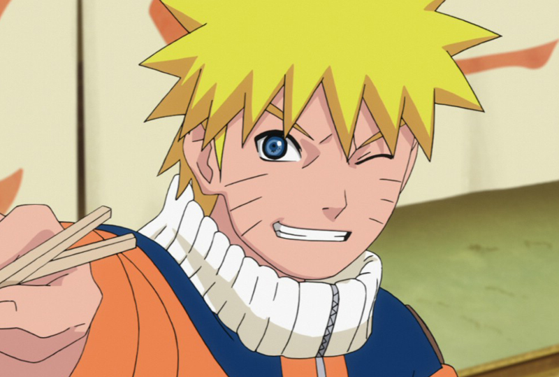
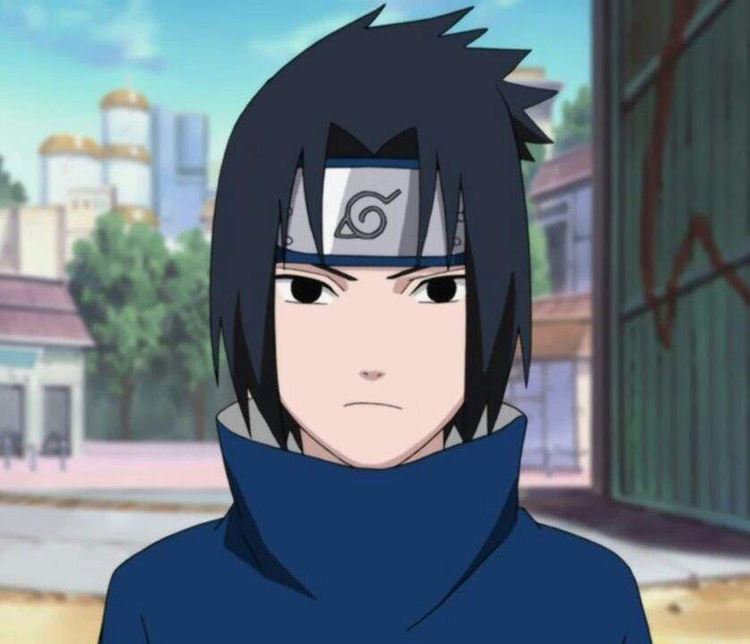
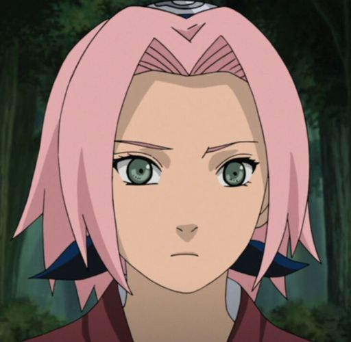

TIME 7
Naruto Uzumaki
Naruto Uzumaki é um shinobi da Vila da Folha do clã Uzumaki e protagonista homônimo da franquia Naruto. Desde seu nascimento, ele se tornou jinchūriki das Nove-Caudas, um destino que o levou a ser condenado e negligenciado por toda a aldeia durante sua infância. Depois de entrar para o Time 7, ao lado de Sakura Haruno, Sasuke Uchiha e sob comando de Kakashi Hatake, Naruto trabalhou duro para ganhar o respeito e o reconhecimento da aldeia, com o sonho de se tornar Hokage. Nos anos seguintes, Naruto torna-se um ninja capaz, que é eventualmente considerado como um herói pelas pessoas de sua aldeia, e mais tarde, pelo mundo shinobi em geral, renomado como o Herói da Vila Oculta da Folha. Posteriormente, Naruto descobre ser a reencarnação do espírito de Ashura e anos depois da Quarta Guerra Mundial Shinobi, Naruto realiza seu sonho e se torna o Sétimo Hokage. Naruto se casa com Hinata Hyūga e tem dois filhos com ela, Boruto Uzumaki e Himawari Uzumaki.
Sasuke Uchiha
Sasuke Uchiha é um dos últimos membros sobreviventes do clã Uchiha da Vila da Folha, além de ser a reencarnação atual de Indra. Ele se tornou um shinobi para que pudesse algum dia ficar forte o suficiente para se vingar contra o seu irmão mais velho, Itachi, que tinha massacrado todo o seu clã. Inicialmente, um membro do Time Kakashi de Konoha, Sasuke desertou da aldeia para obter poder com Orochimaru, e mais tarde também se juntou a Akatsuki, tornando-se um criminoso internacional no processo. Mais tarde, ele se torna uma peça fundamental para acabar com a Quarta Guerra Mundial Ninja, até ser finalmente redimido por seu rival, e também melhor amigo, Naruto Uzumaki. Sasuke decide voltar para Konoha, dedicando a sua vida para ajudar a proteger a vila e seus habitantes.
Sakura Haruno
Sakura Uchiha é uma kunoichi de nível jōnin do clã Uchiha, por se casar com Sasuke Uchiha, da Vila da Folha. Ela é designada como um membro do Time Kakashi, mas rapidamente encontra-se mal preparada para os deveres de um ninja e as complicações das vidas de seus companheiros de equipe. Treinando sob a tutela de sua mestra, Tsunade, ela se torna uma kunoichi mais forte e uma excelente ninja médica, sendo capaz de enfrentar os desafios de uma vida como um ninja, bem como ajudar e proteger seus amigos e entes queridos quando eles precisarem dela. Anos após a Quarta Guerra Shinobi, ela forma sua própria família com Sasuke Uchiha.
Kakashi Hatake
Kakashi Hatake é um shinobi da Vila da Folha. Ele recebeu um Sharingan de seu ex-companheiro de equipe, Obito Uchiha, quando era mais jovem, fazendo-o ser conhecido como Kakashi o Ninja Copiador e Kakashi do Sharingan. Seu prodigioso talento, habilidades e destreza com o Sharingan fizeram dele um dos mais capazes ninjas da aldeia, sendo reconhecido em todo o mundo ninja. Ele acaba sendo nomeado como líder do Time Kakashi, onde ele usa seus anos de experiência para treinar seus alunos para se tornarem ninjas habilidosos de suas próprias maneiras. Logo um tempo após a Quarta Guerra Mundial Shinobi, Kakashi ocupa o cargo público como o Sexto Hokage antes de eventualmente se aposentar e passá-lo ao seu pupilo Naruto Uzumaki.